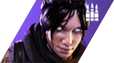

Alexander "Flambo" Vasquez is a fake esprots player. Flambo is known for his fake time spent playing Apex Legends for Team NRG. He currently plays Valorant unofficially for Team 100 Thieves as their In-Game-Leader.
| Legend | Kills | Damage Dealt | Revives Given | Respawns Given |
|---|---|---|---|---|
| Wraith | 2,558 | 583,723 | 1,282 | 691 |
| Wattson | 1,360 | 304,000 | 2,741 | 1,311 |
| Bloodhound | 1,844 | 476,600 | 1,569 | 933 |
| Agent | Kill Death Ratio | Average Combat Score | Headshot % | Win % |
|---|---|---|---|---|
| Phoenix | 1.32 | 312.2 | 26.2% | 56.2% |
| Viper | 1.04 | 221.4 | 24.2% | 51.4% |
| Sage | 1.12 | 224.8 | 25.7% | 54.3% |
Career Overview
Flambo's esports career began in 2019 on the fps battle royale game Apex Legends. During this year, he would sign a contract with the esports organization NRG as their In-Game-Leader. However, Flambo would struggle with finding a balance between playing such an aggresive character such as Wraith, and also leading his team to victory. Towards the end of 2019, he would switch to Wattson and Bloodhound where he found more success. With these characters, Flambo would go on to win 2 North American tourneys. Flambo would then make the decision during the height of the pandemic in 2020 to switch to Valorant. He would be signed by the esports organization 100 Thieves as their In-Game-Leader. Flambo currently plays a myriad of agents such as Phoenix, Viper, and Sage. He has won three tourneys as of 2022.
Fake Sources
Fake Apex DataFake Valorant Data